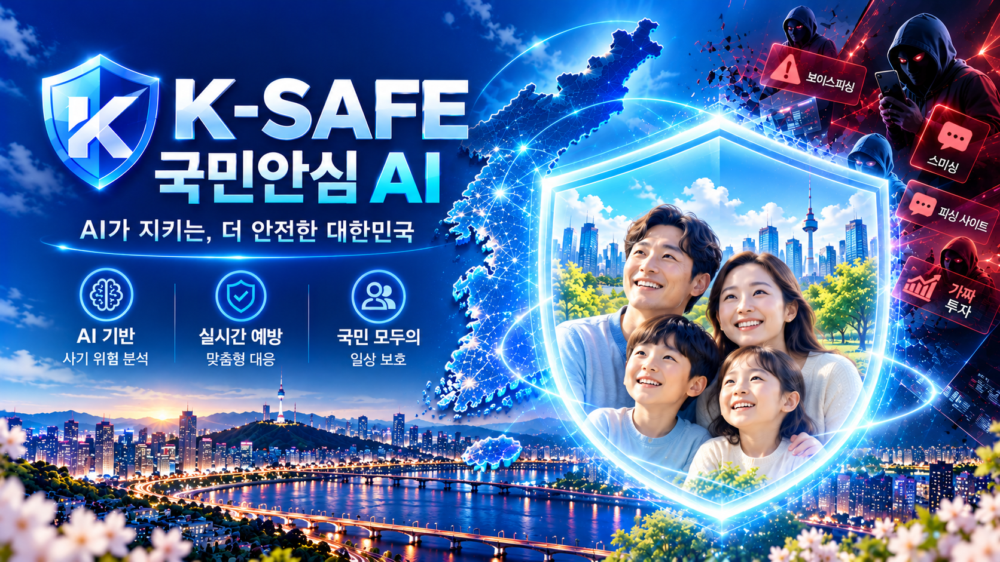
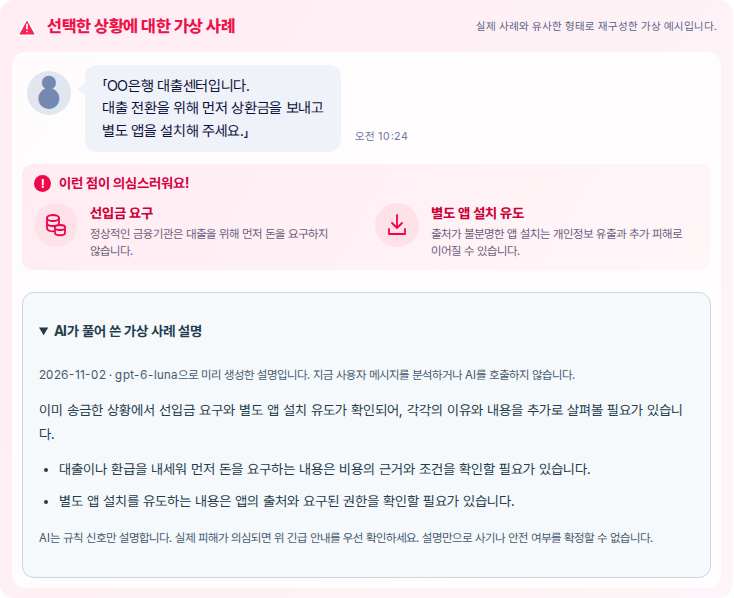

상황별 안전행동 안내와 원문을 보내지 않는 AI 보조 설명
해커톤 시연 MVP · 2026-11-02 · 실제 사기 판정 서비스 아님

송금 전: 행동을 멈추고 공식 경로로 확인
이미 송금: AI보다 먼저 긴급 안내
앱 설치 후: 안전한 다른 기기로 확인
모호한 상황: 안전을 보증하지 않고 한계 표시
공개: 네 가상 사례 · 반응형 UI · 사전 생성 AI 설명
개발: 합성 입력 → 규칙 분석 → 실제 AI 보조 설명
운영: 사용자 입력·실시간 AI 분석 미개방
자동 신고·송금·지급정지·기관 연동 없음

실제 AI로 미리 생성한 가상 사례 설명
지금 메시지를 분석하거나 AI를 호출하지 않음
긴급 행동·공식 확인 안내를 우선 표시
브라우저 → 로컬 서버: 합성 메시지와 상황
로컬 규칙: 가림·공백 정규화·위험 신호 추출
외부 AI: 상황 enum + 서버 신호 ID·고정 설명
검증 후 화면: 규칙 판정·행동 + AI 보조 설명
위험 수준과 긴급 행동은 규칙이 결정
8초 제한 · 재시도 0 · 부적절한 출력 거부
오류 시 규칙 안내, 상황 변경 후 늦은 결과 무시
실행당 24회·동시 1회: 운영 전체 예산은 아님
74개 자동 테스트 · 타입 검사 · 빌드 PASS
8개 공개 브라우저 검사: 모바일·키보드·메뉴
7개 AI 사용자 흐름 체크: 실제 응답·오류·지연
로컬 production: / 200 · /lab 404 · 분석 POST 503
기존 합성 54건과 공개 사례는 개발·회귀 자료
줄바꿈으로 인한 누락을 관측·보존한 뒤 수정
AI 작성 후보 24건: 독립 평가를 대체하지 않음
실제 금융사기 탐지율·피해 예방률 주장 없음
0:00–1:00: 송금 전·후 전환과 긴급 안내
1:00–1:30: 사전 생성 설명의 표시와 한계
1:30–2:20: 개발 화면의 실제 AI 설명
2:20–3:00: 실패 대체·증빙·미완료 항목
공식 대회 공고·기한·AI 요건 확인 필요
정식 평가는 별도 작성자의 새 자료 필요
발표 리허설과 최종 공개 문구 검토
실제 입력 공개 전 접근·분산 제한·운영 검증